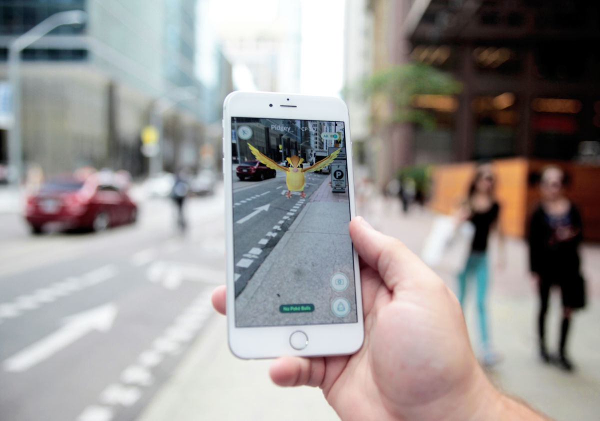

Medical
The Madical industry is currently in need of methods to display vast amounts of information. Their vast use of imaging technologies requires doctors to be able to read and interpret a variety of scans. A virtual reality viewing system could make this task infinitely easier and more accurate.

Gaming
Augented reality gaming is already here. With Niantic's hit game, Pokemon Go, sweeping the nation, millions of smartphone users have already found themselves immersed in virtual realities. That being said, Pokemon go was neither the first nor the last attempt to apply Augmented reality to create immersive experiences. It only allowed for limited virtual interactions, and future attempts are sure to be more immersive.